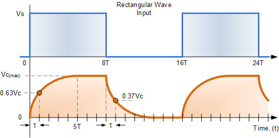

As discussed above, ion channels have a voltage threshold that opens them. We can successfully interpret how the microscopic threshold of the ion channels forms the macroscopic phenomenon that a voltage threshold exists for the membrane. Section 17.3 in [26], introduces further (current and charge) thresholds. After introducing the “slow current” notion, we can understand that the same voltage threshold manifests in apparently different thresholds.
As discussed, introducing a sustained current implies the introduction of a sustained slow current on the membrane’s surface. The sustained current means a sustained presence of ions on the surface, resulting in a continuous increase of potential offset over the resting potential value. As observed, “the somatic membrane potential responds with a slight overshoot”. Given that the charge collection for initiating an AP starts at a voltage above the resting potential, the voltage threshold is reached earlier. The introduced external current is added to the sustained clamping current. The charge delivered by the newly added slow current appears delayed (after the onset). Depending on the point of the membrane the current is added, the delay may be up to 1 msec. (As [50] demonstrated, the propagation speed inside a neuron is in the order of less than 1 cm/s; furthermore, as we discussed, the need to use electrolyte electrodes can prolong the measured delay time considerably.) The current threshold is another manifestation of the voltage threshold.
As we discussed in section 2.2.4, the virtue of a capacitive current is used only to imitate the effect of a slow current: biology has no discrete capacitance. The capacitive current exists only as a virtual notion in the electric circuit comprising discrete elements that are considered parallel with the biology-imitating circuit comprising distributed elements. In the lack of notion of a “slow” current, for “rapid events”, one may attempt to replace the “delayed rectifying current” with an instantaneous current. As formulated in section 17.3.5 in [26]: “Because we are considering rapid events, the steady-state I-V in Eq. 17.4 must be replaced by the instantaneous I-V curve”. However, the rapid events are not rapid enough to make such a replacement in a differential equation. This replacement results in their Eq. (17.7) non-matching values are used. As we explained, Eq. (3.9) formulates Kirchoff’s Law in biology. Using a virtual parameter “capacity ” for biological neurons misleads research: introduces a nonexisting “charge threshold”, which exists only due to mismatching notions of finite-speed biological circuits with notions of the infinite-speed abstract electric circuits, used to imitate a finite-speed current in terms of a virtual infinite-speed current.
If we apply a continuous square wave voltage waveform to an integrator-type electric RC circuit, we receive an output wave form shown in Fig. 4.7. After switching a voltage to the circuit, a charge-up process starts, then the output voltage saturates. After switching the voltage off, the condenser discharges. The time constant for the charge and discharge processes are identical. If the time period of the input square wave waveform is made longer (in the figure with a half-period “”), the capacitor would then stay fully charged longer and also stay fully discharged longer.

HH measured [14] the time course of the neuronal membrane (i.e., a neuronal circuit) when switched clamping axonal voltage on and off. Their measurement result is shown in Fig. 4.8. They experienced a formal similarity with switching a voltage of an integrator-type circuit on and off, compare to Fig. 4.7, so they concluded that the response of the neuronal circuit is identical to that of the integrator-type electric circuit (see our discussion in sections 2.4.6 and 2.4.6). They (mistakenly) concluded that the electric equivalent circuit of a neuron is a parallelly switched electric oscillator. One more evidence that ”the success of the equations is no evidence in favour of the mechanism that we tentatively had in mind when formulating them”.
Figure 4.8 shows two switch-on diagram lines, with two different time constants. The blue line (”electric”) is drawn with the measured time constant of the swith-off discharge. Acconding to the theory of electricity, the time constants of the falling and rising edge must be the same in the case of an electric integrator. The green diagram line (the one fitted to the measured data) correspond to a different time constant. The effect was observed by [14], but they did not explain and also did not interpret it. Although their fitted polynomial nearly hides the effect, a little ”hump” at around can be observed. The reason is that the charge-up current is not constant, it also has a time course; despite that they stabilized the voltage.
The different time constants should have been a warning sign for HH that the measured effect differs from the one they had in mind. They wanted to believe and demonstrate that they have measured the output signal of a serial circuit. With the evaluation of their measurement, they suggested some wrong hypotheses
They misidentified the current as the change of conductance. No conductance change happens, only a condenser changes and discharges. They worked with a condenser, not with a resistor.
They meticulously observed and measured that the time contants of the exponential charge-up and discharge processes are different; but did not care that they should be indentical and also did not care of the ”hump”.
They measured the resulting charge-up composite process. As we explain in section 2.4.2, before switching the clamping voltage, there is no charge carrier inside the axonal tube; first, the ions must diffuse into the axon.
They fitted the rising time course with a polynomial, hiding that it comprises a saturating voltage of the condenser, that the current through the axon also saturated with a different time constant, and at the begining the line had a zero current contribution.
On the one side, they underpinned that our equations 2.38 and 2.37 describe correctly the axonal chargeup current and discharge currents, respectively. On the other, as they noticed that the time constants of the two processes are significantly different (see the green and the dashed blue diagram lines), underpinned that the axonal charge production mechanism significantly changes the axonal source current. The green line has significantly slower rise since the axonal current only gradually increases after switching the clamping on. Without that current change, the charge-up current would follow the blue line. Unfortunately, there are three physical processes, with similar time constants. One, that they wanted to demonstrate is the steady state: the current leads to a saturated current. Two, that the clamping ”creates” charge carriers in the axon, so the charging current changes. Three, the initial switch-on creates a voltage gradient on the membrane, so an action potential is also started.
Their equations more or less precisely describe the features of the wrong oscillator type and those of the non-existing current introduced for compensating for the wrong oscillator selection.